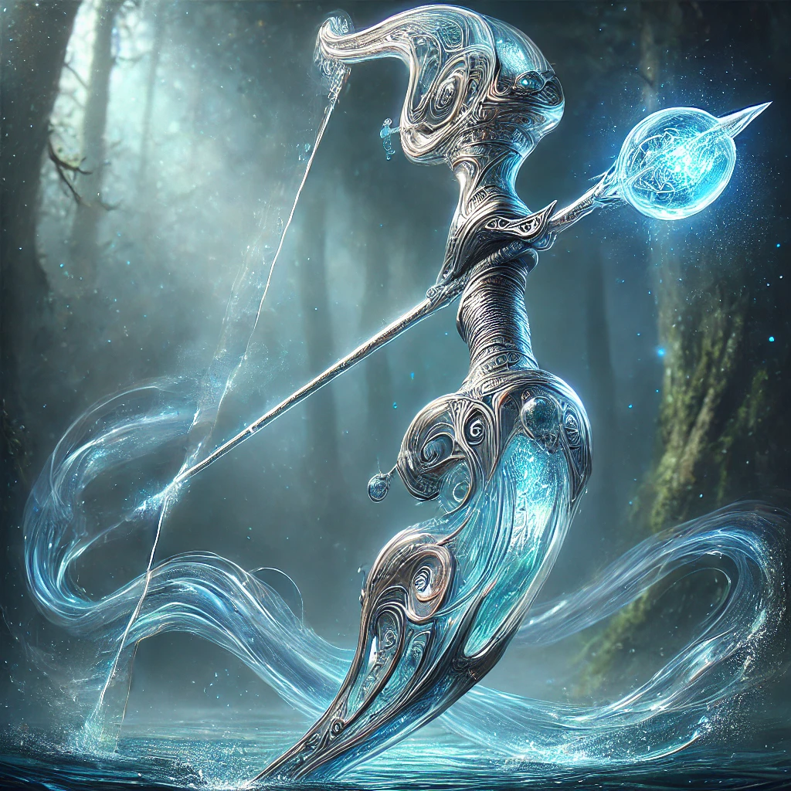

Arcos
Aqua Simulacra
Descrição: Um arco lendário de água, transformando-se quando necessário em lâmina. A Aqua Simulacra é envolta em mistério, representando a fluidez e a pureza da água. Capaz de mudar de forma, imitar qualquer vida, ela é uma arma poderosa e versátil.
